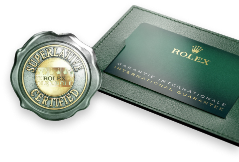

SPESIFIKASI
- Asal Barang: Japan
- Jenis Kelamin: Laki-laki
- Ukuran dial: 38 mm
- Warna casing: Emas 18 karat
- Jenis kaca: Kaca safir
- Kedap air: 100 meter
- Jenis mesin: Drive Quartz crystal (Quartz)
Frekuensi 32768 vps. menggunakan
baterai premium
- Bahan casing: Baja titanium berlapis
emas 24 karat
- Jenis Kawat: Logam
- Kedap air: 100 meter
- Garansi: Garansi 5 tahun
